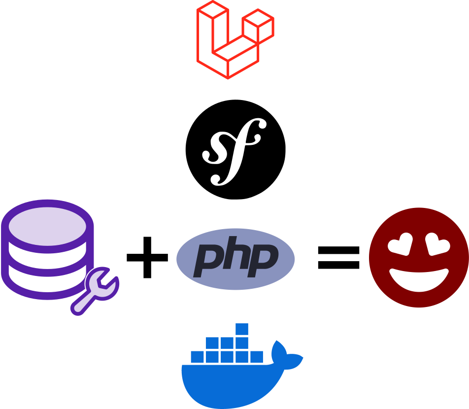

DbToolsBundle
A set of Console Commands
-
 Backup
Backup
db-tools backup -
 Restore
Restore
db-tools restore -
 Anonymize
Anonymize
db-tools anonymize -
 Display statistics
Display statistics
db-tools stats
DbToolsBundle
Works on top of most popular Database vendors:


Performance
Try it on our benchmark app:
4 Database connections
(PostgreSQL, SQLite, MySQL, MariaDb)- 3 Entities to anonymize
- Customer: email · password · lastname · firstname · age
- Address: a complete postal address (5 fields)
- Order: telephone · email · amount · note
Performance
| Customer | Address | Order | PostgreSQL | SQLite | MariaDB | MySQL |
|---|---|---|---|---|---|---|
| 100k | - | - | ~5s | ~7s | ~20s | ~53s |
| 1 000k | - | - | ~16s | ~16s | ~1m 23s | ~36m 56s |
| - | 200k | - | ~6s | ~10s | ~26s | ~42s |
| - | - | 1 000k | ~16s | ~11s | ~1m 15s | ~25m 1s |
| 100k | 200k | - | ~7s | ~10s | ~32s | ~1m 16s |
| 100k | 200k | 1 000k | ~24s | ~25s | ~1m 40s | ~36m 47s |
Performance
- Anonymizing with SQL only
- One update query per table
- Build with a complete query builder
Flavors
Flavors
user@prod:~$ vendor/bin/db-tools anonymize --local-database
user@prod:~$ php bin/console db-tools:anonymize --local-database
user@prod:~$ docker compose run dbtools anonymize --local-database
user@prod:~$ php artisan db-tools:anonymize --local-database